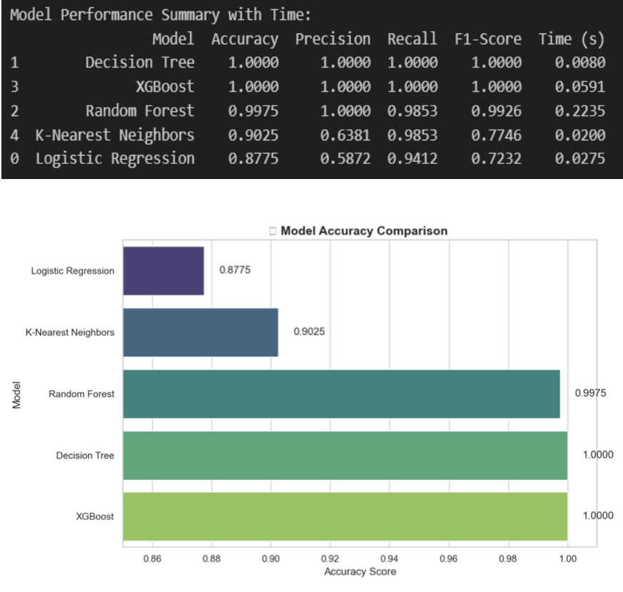

Research Focus
My work sits across four connected threads: building and evaluating machine learning models
(ensemble methods, deep learning), examining fairness and interpretability in AI systems,
designing human-centered interfaces for underserved users, and engineering the data infrastructure
that makes reliable, reproducible analysis possible. I'm especially interested in how these threads
come together in assistive technology for aging and vulnerable populations.
Professional Experience
Research Assistant
Northeastern University - Toronto • with Prof. Zheng Zheng
Conduct research in machine learning applications for healthcare and accessibility technology, applying statistical modeling and predictive analytics to complex datasets. Collaborate with industry partners on automated analysis systems and research reporting, translating findings into practical, real-world solutions.
IT Data Co-op
Castrol - Wakefield Canada Inc • Jan 2026 – Present
Support data systems and analytics work within the IT function, applying data science coursework to enterprise operations.
Consultant
RCIScience (Royal Canadian Institute for Science) • Oct 2024 – Jan 2026
Provided research and analytical consulting support to a science-focused nonprofit organization on a remote, part-time basis.
System Analyst
Bayvape • Oct 2023 – Present
Analyze and maintain business systems, supporting operational reporting and process workflows on a part-time contract basis.
Business Analyst
Prismetric Technologies Pvt Ltd • Mar 2021 – Sep 2023
Conducted technology market and competitive research, translating findings on AI adoption and digital transformation into actionable insight for enterprise stakeholders.
Marketing Analyst
Gujarat Infotech Limited • Nov 2020 – Feb 2021
Supported user research and demographic analysis for a national pension system, applying statistical methods to improve service delivery and engagement for elderly users.
Education
M.S. in Information Systems
Northeastern University - Toronto • GPA: 3.8 • Expected 2027
Data Science Engineering Methods, Advanced Machine Learning Applications, Database Architecture
Postgraduate Diploma in Mobile Application Development
Centennial College • GPA: 3.9
Full-stack development, mobile UX design, software engineering principles
Bachelor of Computer Applications
Gujarat University • First Class with Distinction • GPA: 4.0
Computer science fundamentals, programming, database systems
Featured Research & Projects
Machine Learning
Healthcare AI: Ensemble Learning for Clinical Prediction

Challenge: Ensemble machine learning models for healthcare prediction, addressing data imbalance and clinical interpretability.
Solution: XGBoost, Random Forest, and Neural Networks with SMOTE balancing and statistical validation.
Impact & Results:
- Built and validated ensemble models under severe class imbalance in medical datasets
- Benchmarked multiple architectures against clinical interpretability constraints
- Developed model evaluation framework suited to real clinical decision contexts
Data Management & Engineering
Toronto Bicycle Thefts: End-to-End Data Pipeline & BI Dashboard
Challenge: Ten years of open municipal crime data (39,000+ records) needed to move from raw CSV to a live, explorable analytics layer usable by non-technical stakeholders.
Solution: Built a streaming-to-warehouse pipeline: Kafka/ZooKeeper ingestion on EC2, a six-stage Python/pandas ETL layer, S3 + RDS MySQL for storage and analytics, 15 hand-written SQL queries with pre-aggregated views, and an Amazon QuickSight dashboard with geospatial and time-series drill-downs.
Impact & Results:
- Designed full data lifecycle: ingestion, cleaning, warehousing, and BI-layer modeling
- Surfaced actionable patterns, including theft concentration by location type and citywide recovery-rate trends
- Built for non-technical exploration, translating a raw open dataset into stakeholder-usable insight
Data Management & HCI
BCMS: Human-Centered Airport Operations Database

Challenge: Airport operations with fragmented systems causing inefficiencies in baggage handling and catering services.
Solution: Integrated relational database with 15+ entities, real-time tracking, and user-centered design for diverse stakeholders.
Impact & Results:
- Designed comprehensive database architecture for complex, multi-stakeholder operations
- Real-time tracking system improving passenger experience
- Human-centered approach to technical system design at scale
Human-Computer Interaction
WeCare: Elderly Care Mobile Application with Human-Centered Design

Challenge: Designing mobile interfaces for elderly care that address complex caregiver workflows in skilled nursing facilities while prioritizing accessibility.
Solution: Flutter-based mobile application built with empathy mapping, persona development, and iterative usability testing for caregiver task management.
Impact & Results:
- Developed accessibility-focused interfaces for elderly care contexts
- Applied human-centered design methodology from research through implementation
- Built task-prioritization systems addressing real caregiver workflow challenges
Human-Computer Interaction
National Pension System: Accessible Design for Elderly Users

Challenge: Government system accessibility for elderly users navigating complex pension regulations.
Solution: Comprehensive user manuals and accessible interface design for senior citizens.
Impact & Results:
- Simplified pension registration for millions of users
- Improved elderly accessibility in government services
- Clear documentation for complex regulatory processes
Full-Stack
FlowCart: Empowering Female Entrepreneurs

Challenge: Delivery platform for female-driven small businesses addressing operational challenges.
Solution: JavaFX and MySQL with role-based interfaces and real-time tracking.
Impact & Results:
- Streamlined operations for women entrepreneurs
- Role-based access control for different user types
- Intuitive interfaces reducing operational complexity